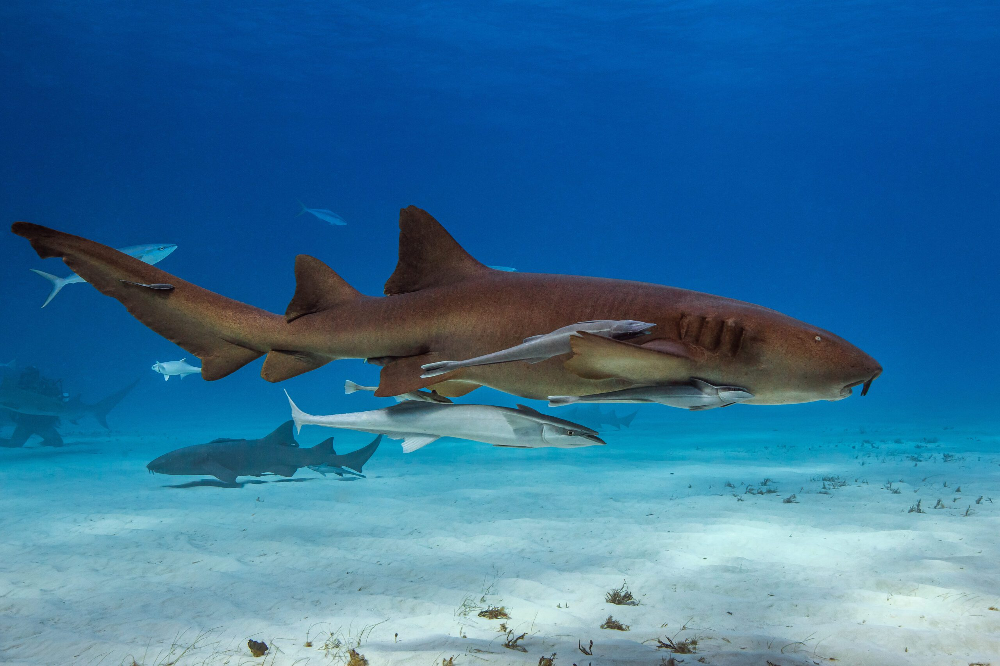
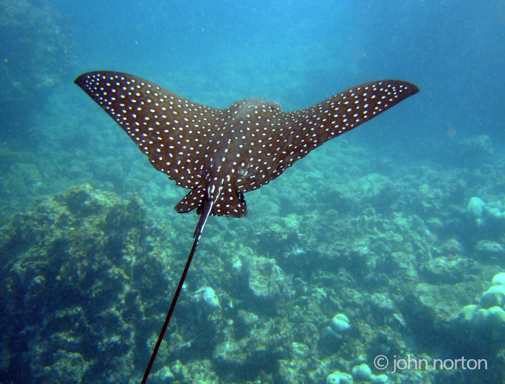
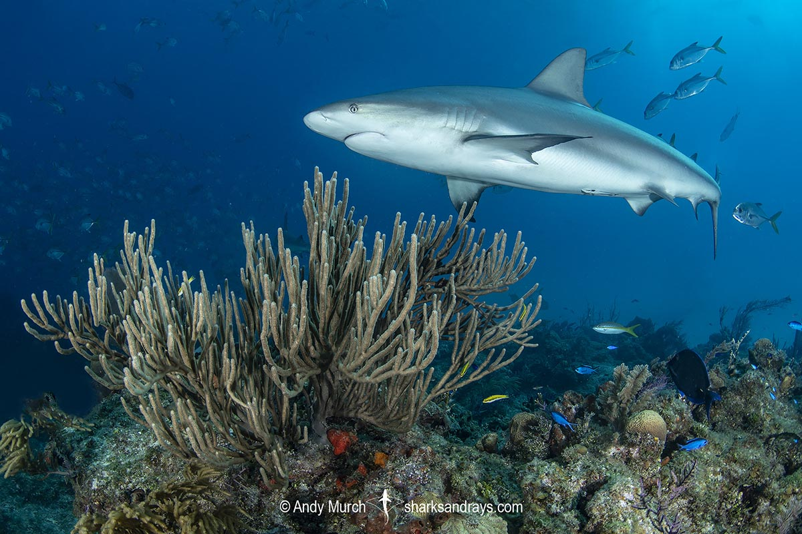
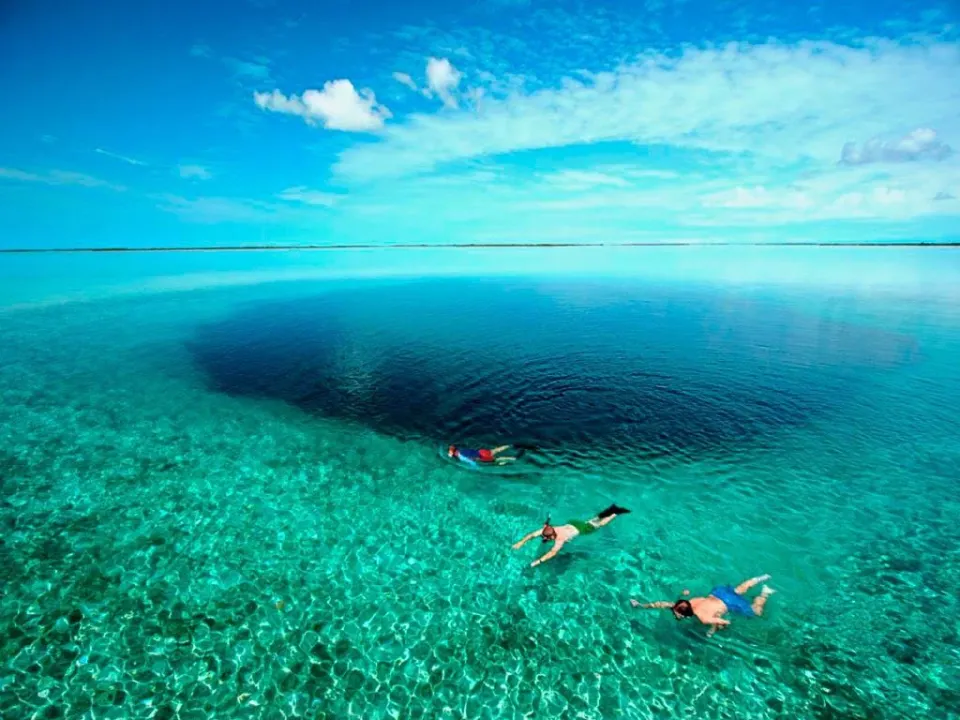

Discover the Blue Hole's Majestic Marine Life
The Blue Hole is one of the most famous dive sites in the world, known for its crystal-clear waters and dramatic underwater stalactites. The site offers divers the chance to encounter unique species of marine life in the midst of its underwater caverns.
Some of the Iconic Aquatic Life

Nurse Shark

Spotted Eagle Ray

Caribbean Reef Shark
Other Incredible Species
- Blacktip Reef Sharks
- Loggerhead Sea Turtles
- Moray Eels
- Grouper Fish
- Various species of Jellyfish
Stunning Underwater Photography
The view of the Blue Hole from above and below is breathtaking, with clear, vibrant waters and a stunning contrast between the dark depths and bright shallow waters.